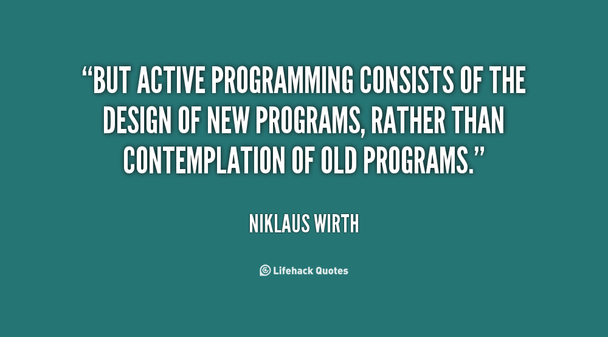
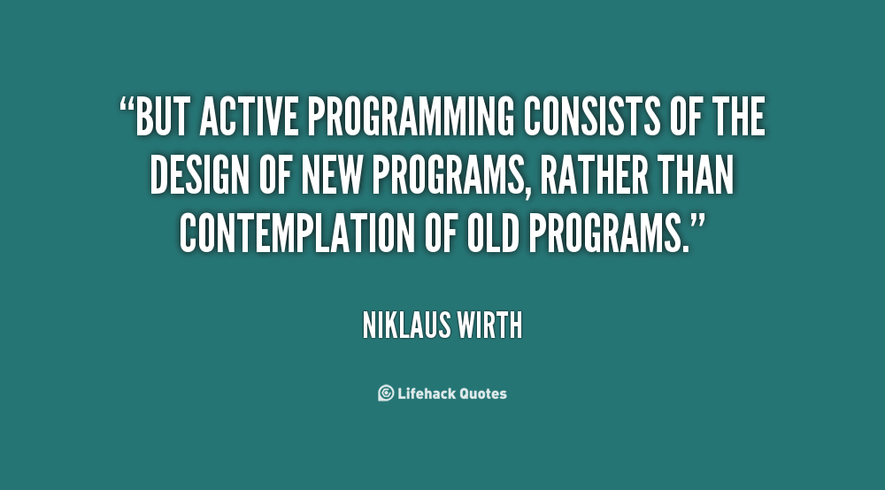

| Libros |
Autores |
Publicacion |
|
- Introduction to Algorithms
|
Thomas H. Cormen |
2009 |
|
- The Pragmatic Programmer: Your Journey to Mastery
|
Dave Thomas |
1999 |
|
- Clean Code: A Handbook of Agile Software Craftsmanship
|
Robert C. Martin |
2008 |
|
- Structure and Interpretation of Computer Programs
|
Harold Abelson, Gerald Jay Sussman |
1996 |
|
- Design Patterns: Elements of Reusable Object-Oriented Software
|
Erich Gamma, Richard Helm, Ralph Johnson, John Vlissides |
1994 |
|
- Code Complete: A Practical Handbook of Software Construction
|
Steve McConnell |
1993 |
|
- Artificial Intelligence: A Modern Approach
|
Stuart Russell, Peter Norvig |
2009 |
|
- Computer Networks
|
Andrew S. Tanenbaum, David J. Wetherall |
2010 |
|
- Operating System Concepts
|
Abraham Silberschatz, Peter B. Galvin, Greg Gagne |
2018 |
|
- Compilers: Principles, Techniques, and Tools
|
Alfred V. Aho, Monica S. Lam, Ravi Sethi, Jeffrey D. Ullman |
2006 |
|
- Database Management Systems
|
Raghu Ramakrishnan, Johannes Gehrke |
2002 |
|
- Art of Computer Programming, Volumes 1-3
|
Donald E. Knuth |
1997 |
|
- Computer Organization and Design: The Hardware/Software Interface
|
David A. Patterson, John L. Hennessy |
2017 |
|
- Introduction to the Theory of Computation
|
Michael Sipser |
2012 |
|
- The Mythical Man-Month: Essays on Software Engineering
|
Frederick P. Brooks Jr |
1995 |
|
- Computer Security: Principles and Practice
|
William Stallings, Lawrie Brown |
2018 |
|
- Artificial Intelligence: Foundations of Computational Agents
|
David L. Poole, Alan K. Mackworth |
2017 |
|
- Computer Graphics: Principles and Practice
|
John F. Hughes, Andries van Dam, Morgan McGuire |
2013 |
|
- The Algorithm Design Manual
|
Steven S. Skiena |
2008 |
|
- Introduction to Data Mining
|
Pang-Ning Tan, Michael Steinbach, Vipin Kumar |
2005 |
 
